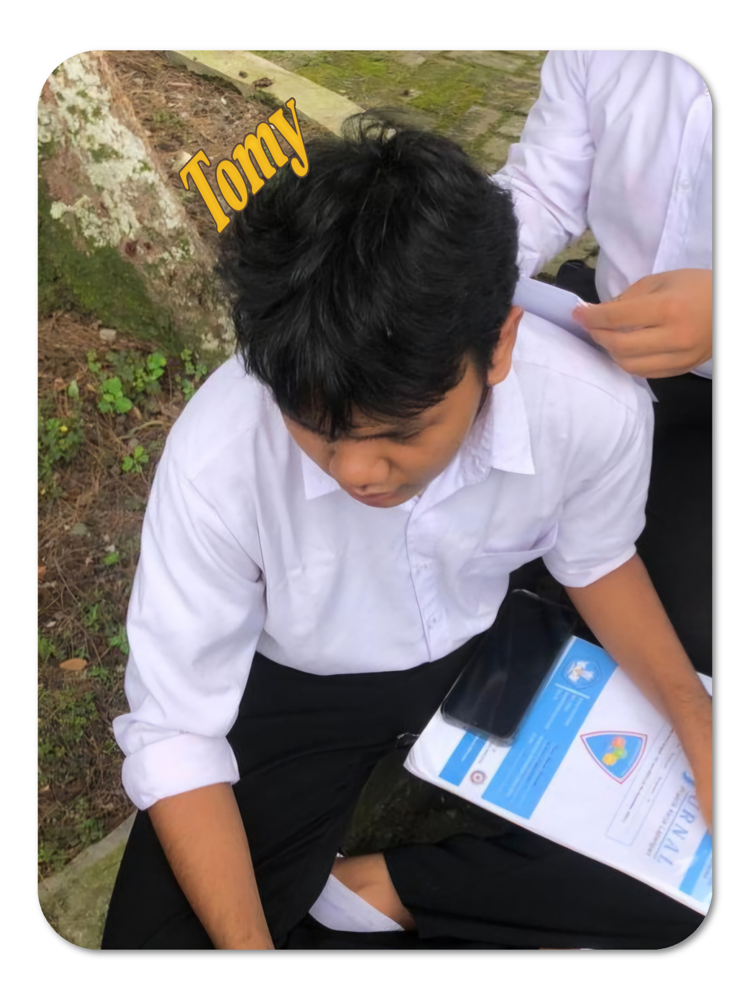

Namaku Tomy Aditya Batubara, aku mahasiswa Jurusan Teknologi Informasi USU.
Saya berminat di bidang UI/UX karena sebelumnya saya juga suka editing dan designing. Selain itu saya juga berminat
di bidang fotografi, meskipun saya berkuliah di jurusan TI tidak menutup kemungkinan saya memiliki perminatan di bidang lain.
Saya memang belum memiliki project di bidang TI tapi dibawah ini ada portofolio saya yang berisikan pengalaman Saya
di bidang Editing dan PHotography.

Riwayat Pendidikan
Saya bersekolah di SMKN 9 Medan dan berjurusan rekayasa perangkat lunak.
Jadi menurut saya jurusan saya masih tercakup dalam bidang yang saya minati yaitu UI/UX.